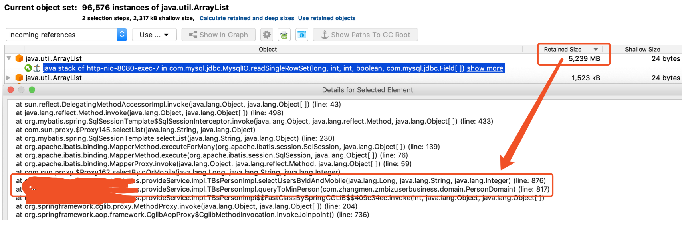

1.背景
项目中经常出现因为Mybatis的动态where条件不满足导致实际sql语句的where条件为空,进而查询全表,当数据量比较大的时候,导致OOM的情况。比如当用户表的数据量为4千万时,如果load全表数据量将会导致OOM，如下图所示,为了解决这种情况基于Mybatis Plus自定义Interceptor实现统一的拦截。

2.开发
Halo Mybatis从1.2版本开始将会，增加如下的功能:
对空Where进行拦截判断
并支持开关关闭空where拦截
支持白名单设置,即在白名单中的表名将不会进行拦截
支持多数据源进行拦截check
2.1 核心代码实现
import com.baomidou.mybatisplus.core.toolkit.CollectionUtils;
import com.baomidou.mybatisplus.core.toolkit.PluginUtils;
import com.baomidou.mybatisplus.core.toolkit.StringUtils;
import com.baomidou.mybatisplus.extension.handlers.AbstractSqlParserHandler;
import com.google.common.collect.Sets;
import org.xujin.halo.mybatis.properties.HaloMybatisProperties;
import lombok.extern.slf4j.Slf4j;
import org.apache.ibatis.executor.statement.StatementHandler;
import org.apache.ibatis.mapping.MappedStatement;
import org.apache.ibatis.plugin.*;
import org.apache.ibatis.reflection.MetaObject;
import org.apache.ibatis.reflection.SystemMetaObject;
import java.lang.reflect.InvocationTargetException;
import java.sql.Connection;
import java.util.List;
import java.util.Properties;
import java.util.Set;
/**
* 当Mybatis SQL出现空where并拦截
* @author xujin
*/
@Intercepts({ @Signature(type = StatementHandler.class, method = "prepare", args = { Connection.class, Integer.class })})
@Slf4j
public class HaloEmptyWhereInterceptor extends AbstractSqlParserHandler implements Interceptor {
private HaloMybatisProperties haloMybatisProperties;
public HaloEmptyWhereInterceptor(HaloMybatisProperties haloMybatisProperties) {
this.haloMybatisProperties=haloMybatisProperties;
}
/**
* 拦截的 COMMAND 类型
*/
private static final Set<String> INTERCEPTOR_COMMAND = Sets.newHashSet("select", "update", "delete");
/**
* sql中的where关键字
*/
private static final String WHERE="where";
@Override
public Object intercept(Invocation invocation) throws Throwable {
String originSql = "";
try {
StatementHandler handler = PluginUtils.realTarget(invocation.getTarget());
MetaObject metaObject = SystemMetaObject.forObject(handler);
// SQL 解析
this.sqlParser(metaObject);
MappedStatement mappedStatement = (MappedStatement) metaObject.getValue("delegate.mappedStatement");
//获取当前的Statement的ID
String mappedStatementId = mappedStatement.getId();
log.info("Halo Mybatis check Empty Where StatementId Is:{} ",mappedStatementId);
List<String> whiteList=haloMybatisProperties.getEmptyWhereWhiteList();
if(CollectionUtils.isNotEmpty(whiteList)){
//在白名单中不进行check
if(whiteList.contains(mappedStatementId)) {
return invocation.proceed();
}
}
//获取SqlCommandType
String commandType = getCommandType(handler);
if (!INTERCEPTOR_COMMAND.contains(commandType)) {
return invocation.proceed();
}
//获取执行的sql判断sql是否包含where
String sql=handler.getBoundSql().getSql();
if(StringUtils.isEmpty(sql)){
return invocation.proceed();
}
originSql = sql.toLowerCase();
} catch (InvocationTargetException e) {
log.error("halo check EmptyWhere fail!",e);
} catch (IllegalAccessException e) {
log.error("halo check EmptyWhere fail!",e);
}
//当select,update,delete中不包含where的时候,记录error日志,并抛出运行时异常
if(StringUtils.isEmpty(originSql)){
return invocation.proceed();
}
if (!originSql.contains(WHERE)) {
log.error("Prohibit The Use of SQL statements Without Where conditions.originSql is:{}", originSql);
throw new RuntimeException("Prohibit The Use of SQL statements Without Where conditions.originSql is:"+originSql);
}
return invocation.proceed();
}
@Override
public Object plugin(Object target) {
return Plugin.wrap(target, this);
}
@Override
public void setProperties(Properties properties) {
}
/**
* 获取Command类型转小写并返回
* @param statementHandler
* @return
*/
private String getCommandType(StatementHandler statementHandler) {
MetaObject metaObject = SystemMetaObject.forObject(statementHandler);
MappedStatement mappedStatement = (MappedStatement) metaObject.getValue("delegate.mappedStatement");
String sqlCommandType=String.valueOf(mappedStatement.getSqlCommandType());
return sqlCommandType.toLowerCase();
}
}
2.2 使用
引入对应的Halo Mybatis Starter，yml文件配置如下:
halo:
mybatis:
#empty-where-intercept: false
empty-where-white-list:
- org.xujin.halo.admin.tunnel.db.dao.AppMapper.queryHaloVersionChart
- org.xujin.halo.admin.tunnel.db.dao.AppMapper.queryApp
halo.mybatis.empty-where-intercept默认为true,即开启空Where条件判断,当为false关闭check
org.xujin.halo.admin.tunnel.db.dao.AppMapper.queryHaloVersionChart表示配置白名单全限定Mapper类型.方法名,在白名单中的不进行check